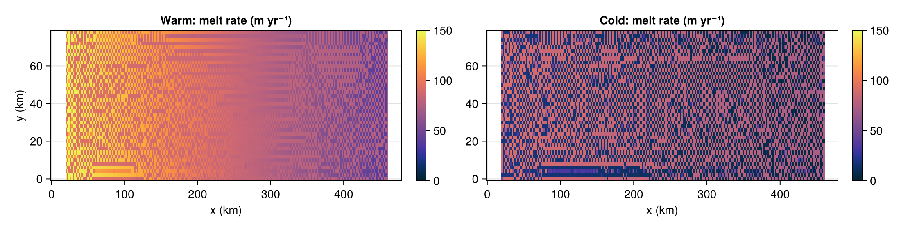
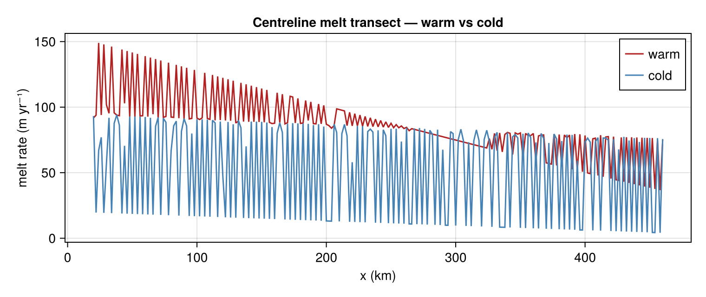
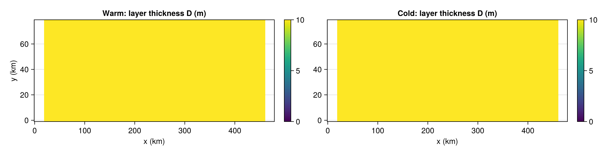

Warm vs cold ISOMIP+ cavities
The ISOMIP+ protocol defines two forcing end-members. The warm cavity (ocean T ≈ +1 °C at 720 m depth) drives strong melting via the ice pump. The cold cavity (T ≈ −1.9 °C everywhere, near the freezing point) produces near-zero melt — buoyancy is driven almost entirely by the residual freshwater flux, and the circulation is much weaker.
This example builds both configurations, runs them for 3 days, and compares their melt rates, layer thicknesses, and centreline transects.
using Laddie
using CairoMakie
CairoMakie.activate!(type = "png")
mw = build_isomip(; isomipcond = :warm)
mc = build_isomip(; isomipcond = :cold)
run!(mw; days = 3.0, verbose = false)
run!(mc; days = 3.0, verbose = false)Helper: strip the 1-cell grounded border, mask non-shelf cells to NaN, and transpose to (nx, ny) for CairoMakie's heatmap!.
function field(m, A; peryr = false)
a = peryr ? A .* Laddie.spy : A
a = ifelse.(m.tmask .> 0, a, NaN)
Z = permutedims(a[2:end-1, 2:end-1])
x = (0:size(Z, 1)-1) .* (m.dx / 1000)
y = (0:size(Z, 2)-1) .* (m.dy / 1000)
return x, y, Z
endSide-by-side melt maps
The warm cavity shows the expected peak near the deep grounding line (west), decaying toward the shallow ice front (east). The cold cavity is near-zero everywhere — the same colour scale is used to make the contrast plain.
x, y, Mw = field(mw, mw.melt; peryr = true)
x, y, Mc = field(mc, mc.melt; peryr = true)
clim = (0.0, maximum(filter(isfinite, Mw)))
fig1 = Figure(size = (1100, 280))
ax1 = Axis(fig1[1, 1], xlabel = "x (km)", ylabel = "y (km)", title = "Warm: melt rate (m yr⁻¹)")
ax2 = Axis(fig1[1, 3], xlabel = "x (km)", title = "Cold: melt rate (m yr⁻¹)")
hm1 = heatmap!(ax1, x, y, Mw; colormap = :thermal, colorrange = clim)
hm2 = heatmap!(ax2, x, y, Mc; colormap = :thermal, colorrange = clim)
Colorbar(fig1[1, 2], hm1)
Colorbar(fig1[1, 4], hm2)
fig1
Centreline melt transect
Melt rate along the channel centreline (y = mid) for both cases overlaid. The warm profile peaks at the grounding line and decays toward the ice front; the cold profile is indistinguishable from zero on this scale.
jmid = size(mw.tmask, 1) ÷ 2
mk_line(m) = ifelse.(m.tmask[jmid, 2:end-1] .> 0,
m.melt[jmid, 2:end-1] .* Laddie.spy, NaN)
xx = (0:size(mw.tmask, 2)-3) .* (mw.dx / 1000)
fig2 = Figure(size = (760, 320))
ax = Axis(fig2[1, 1], xlabel = "x (km)", ylabel = "melt rate (m yr⁻¹)",
title = "Centreline melt transect — warm vs cold")
lines!(ax, xx, mk_line(mw); color = :firebrick, label = "warm")
lines!(ax, xx, mk_line(mc); color = :steelblue, label = "cold")
axislegend(ax; position = :rt)
fig2
Layer thickness
In the warm cavity the plume thickens rapidly away from the grounding line as entrainment mixes in ambient water; in the cold cavity the plume stays close to the initialisation thickness D_init = 10 m because entrainment is weak.
x, y, Dw = field(mw, mw.D.present)
x, y, Dc = field(mc, mc.D.present)
clim_D = (0.0, max(maximum(filter(isfinite, Dw)), maximum(filter(isfinite, Dc))))
fig3 = Figure(size = (1100, 280))
ax1 = Axis(fig3[1, 1], xlabel = "x (km)", ylabel = "y (km)", title = "Warm: layer thickness D (m)")
ax2 = Axis(fig3[1, 3], xlabel = "x (km)", title = "Cold: layer thickness D (m)")
hm1 = heatmap!(ax1, x, y, Dw; colormap = :viridis, colorrange = clim_D)
hm2 = heatmap!(ax2, x, y, Dc; colormap = :viridis, colorrange = clim_D)
Colorbar(fig3[1, 2], hm1)
Colorbar(fig3[1, 4], hm2)
fig3
Summary statistics
_, mnw, _ = meltstats(mw)
_, mnc, _ = meltstats(mc)
println("Warm: mean melt = ", round(mnw, digits = 2), " m yr⁻¹")
println("Cold: mean melt = ", round(mnc, digits = 3), " m yr⁻¹")
println("Ratio warm/cold = ", round(mnw / mnc, digits = 1), "×")Warm: mean melt = 87.48 m yr⁻¹
Cold: mean melt = 49.771 m yr⁻¹
Ratio warm/cold = 1.8×This page was generated using Literate.jl.